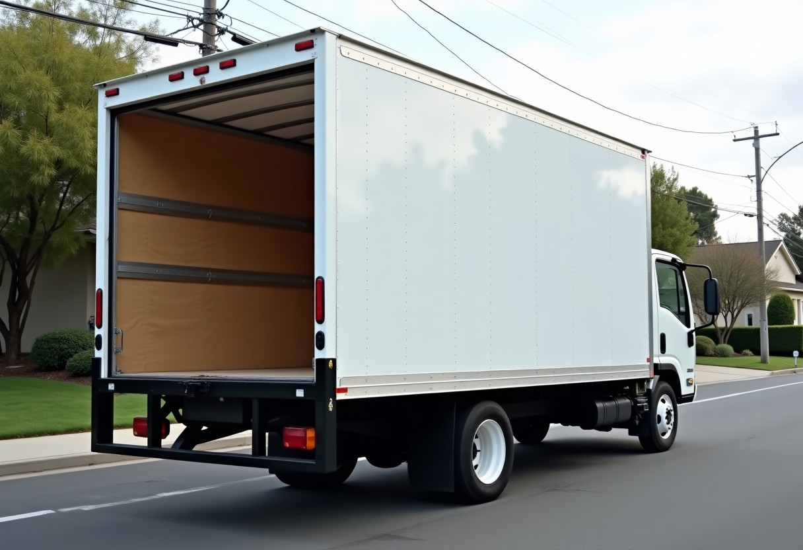
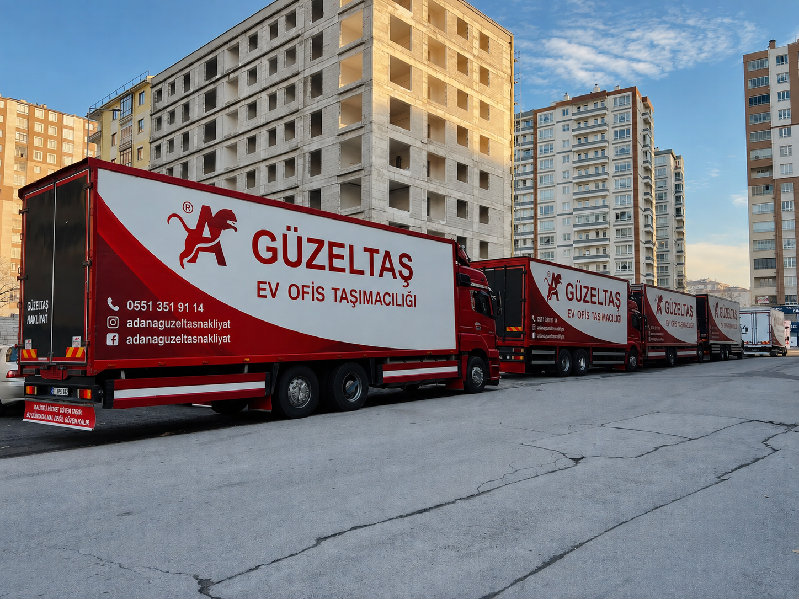
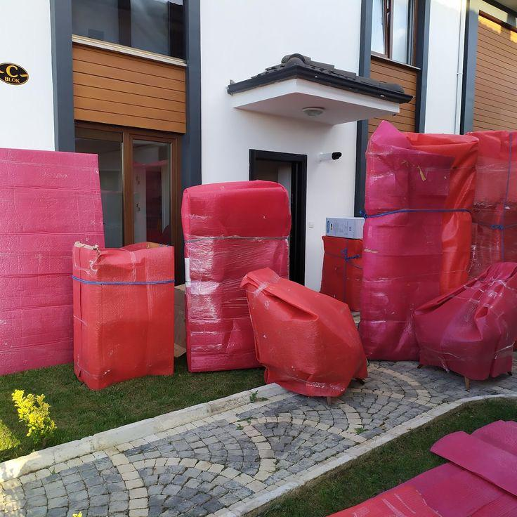
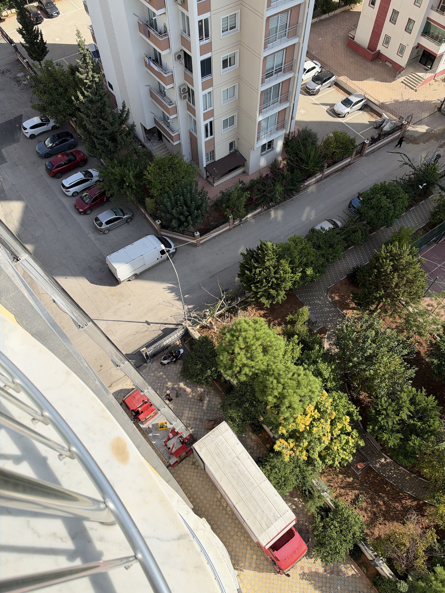
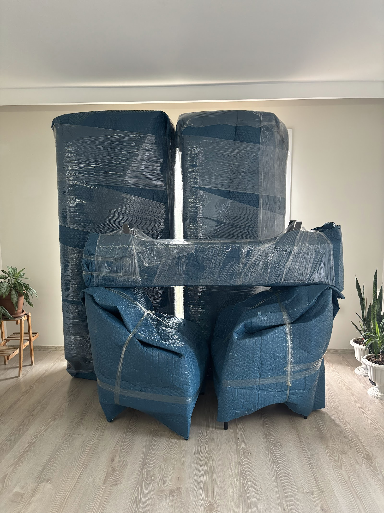

Seyhan · Adana · Evden Eve Nakliyat
Seyhan merkezli ekibimizle Adana içinde, ilçelerde ve şehirlerarası evden eve nakliyat hizmeti veriyoruz. Eşyalarınızı titizlikle paketler, düzenli biçimde taşır, yeni evinize güvenle teslim ederiz.
Ev tipini, katları ve mesafeyi seçin: hangi araç, kaç kişilik ekip, asansör gerekip gerekmediği ve tahmini süre ekranda. Ücretsiz ekspertiz için tek dokunuşla gönderin.

Listeyi doldurun; toplam hacim, gereken koli sayısı ve araç önerisi anında hesaplanır. Liste WhatsApp'a hazır gider, eve gelmeden fiyat verilebilir.
Abonelik nakli, adres değişikliği, koli ve son kontrol: hangi işi hangi gün yapmanız gerektiği tek listede.
Evinizdeki eşyalar paketlenir, araca yerleştirilir ve yeni adresinizde yerlerine teslim edilir.
Adana içinde mahalleden mahalleye yapılan taşınmalarda hızlı ve düzenli hizmet sunarız.
Başka illerden Adana'ya ya da Adana'dan başka illere yapılan taşınmalarda eşyalarınızı özenle ulaştırırız.
Saimbeyli, Aladağ gibi ilçelerden Adana merkeze yapılan taşınmalarda yanınızdayız.
Eşyalarınız taşıma sırasında zarar görmesin diye titizlikle paketlenir.
Eşyalar araca planlı biçimde yerleştirilir; böylece yolda ve indirme sırasında korunur.




Paketleme ve taşıma sırasında eşyalarınız dikkatle ele alınır; müşterilerimiz taşınma sonunda hasarsız teslim aldıklarını anlatıyor.
Taşınma yorucu bir gündür. Ekibimiz ilgili ve nazik tavrıyla bu günü sizin için kolaylaştırır.
Ekip kararlaştırılan saatte gelir, işi düzenli bir şekilde bitirir ve geride temiz bir ortam bırakır.
Taşınma öncesinde ihtiyacınıza göre sizi bilgilendirir, fiyat konusunda yol göstermeye çalışırız.
📍 Gülbahçesi, 13314 SK No:172 A Kat:Z, 01010 Seyhan/Adana
🕑 Pzt–Paz 24 saat